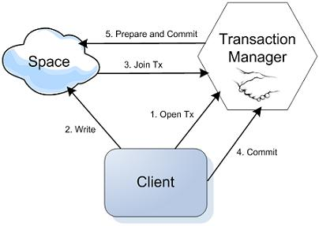
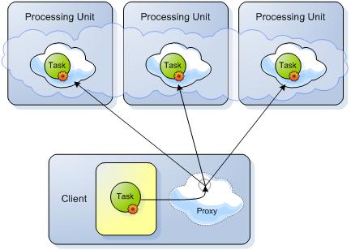
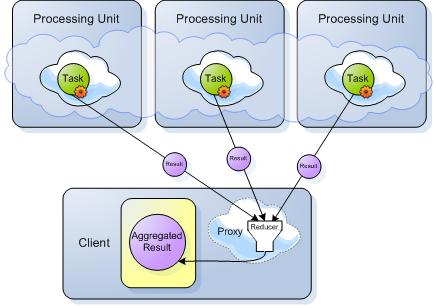
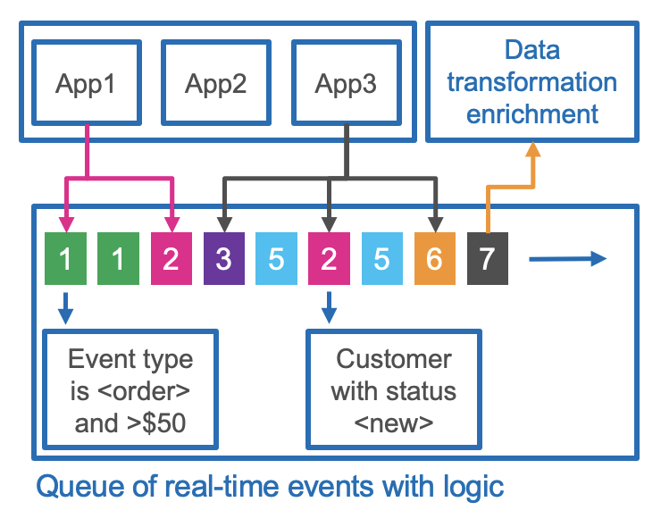

GigaSpaces Smart DIH is part of the GigaSpaces Portfolio — Smart Cache and Smart DIH.
GigaSpaces Smart DIH is a distributed in-memory Digital Integration Hub (DIH), with unparalleled low-latency, high-performance and scale that aggregates and offloads from multiple back-end systems of record and data stores on premise and on cloud. With a unified API layer, digital applications can be decoupled from disparate systems of record to increase agility and ensure always-on services.
When an existing Operational Data Store is already deployed, Smart DIH can augment it to gain better performance, indexing, data integration and ETL replacement. It can be done by either mirroring the DIH actions to the data stores, or by using Smart DIH’s built-in Change Data Capture (CDC) that connects directly with your systems of record, non-intrusively (agentless).
Smart DIH System Overview
The Smart DIH environment can be illustrated as follows:
Architecture of Smart DIH
1. Connect to Data Source
2. Data Tiering
Data is stored in multiple data storage tiers — hot (in-memory) and warm (SSD)
User-defined business rules allows you to place the most important data in hot storage, while other data can be in warm storage.
GigaSpaces manages the full data lifecycle by automatically storing the relevant data in the relevant tiers, federating the queries under the hood to gather all the data in optimal latency and evicting the data according to various policies, from least-recently-used (LRU) to user custom policies. Click here for more information about tiered storage.

"Important" does not necessarily mean "most frequently accessed" — for example, your business rules may place premium customers in hot storage, even if their data is less frequently required.
3. High Availability and Remote Replication
InsideEdge Smart DIH is an enterprise-grade product that provides 5-nines availability. The platform is highly available by having primary and backup instances of data partitions.

Additionally, the platform provides for tier storage and disk persistency, with built-in mirroring service to external databases including initial load and store to the database.

In addition, GigaSpaces provides efficient data replication between sites (Active-Passive/Active-Active) including hybrid environments.

GigaSpaces allows users to utilize rich support for declarative transaction management. The declarative transaction support can be easily utilized with the GigaSpace Interface.

4. High Performance Microservices Framework
GigaSpaces supports Task execution in an asynchronous manner, co-located with the Space (Processing Unit that started an embedded Space). Tasks can be executed directly on a specific cluster member using routing declarations. Tasks can also be executed in “broadcast” mode on all the primary cluster members concurrently, and reduced to a single result on the client side.
A Distributed Task a Tasks that is executed more than once (concurrently). It returns a result that is the reduced product of all operations. This reduction is calculated in the Task’s reduce method.
Phase 1 - Sending the Tasks to be executed:

Phase 2 - Getting the results back to be reduced:

Co-locating data and code significantly improves application performance by reducing serialization and networking overhead. Data processing is performed locally by direct memory access to the data in the server memory space.

The GigaSpaces platform provides a unified capability for distributed data and processing, which enables it to easily scale up and out, using a single API.

Having a unified processing and data storage platform encapsulates all of the required features for keeping the data and processing highly available under the same API framework. In addition, a fast remote replication facility is provided out of the box, including encryption, compression, and filtering or other custom requirements.

5. Event Driven Architecture
GigaSpaces DIH provides the user with a rich API to capture of real-time events and data streams, to automatically trigger notifications, based on defined business logic. Digital apps and external business processes can easily subscribe to any event in pull or push mode without impact on performance.

6. APIs

Smart DIH APIs
Smart DIH supports the full SQL-99 standard, allowing complex queries to be performed with optimal speed and minimal memory footprint. Standard SQL requests used for relational data manipulation can be used without requiring source code changes.
Using Java and .NET APIs, advanced capabilities are available — such as object store, and various data modeling options.
InsideEdge features native integration with Kafka to consume and produce data to and from Kafka topics.
REST-API and command line interfaces are also available.
Smart DIH can easily integrate with BI tools such as Tableau, Looker, and PowerBI.
Deploy Anywhere
Deployment options include:
-
One-click deployment across any scale and environment, on-prem, cloud or hybrid
-
Hot rolling deployment, upgrade, monitoring, scaling and recovery, all with no downtime
-
Support of Kubernetes, OpenShift, or built-in ElasticGrid orchestration systems
Support of Kubernetes and OpenShift orchestration systems

Multiple deployment options of Smart DIH